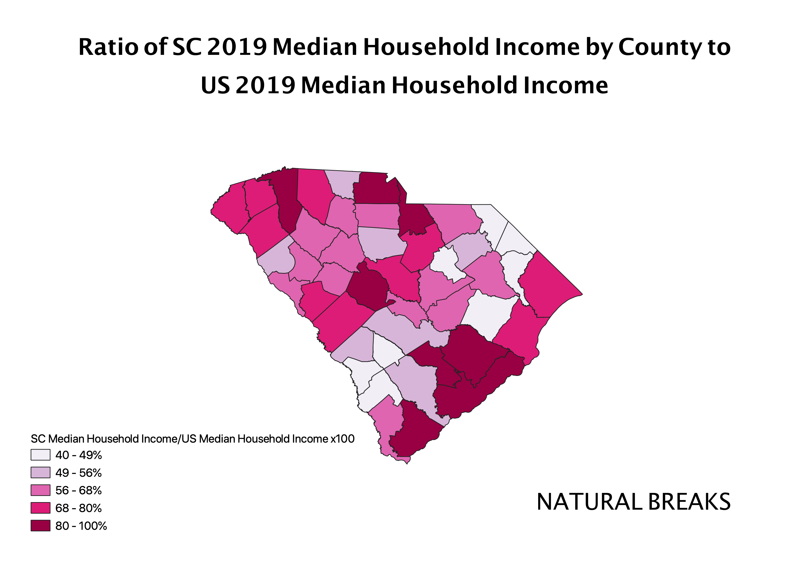
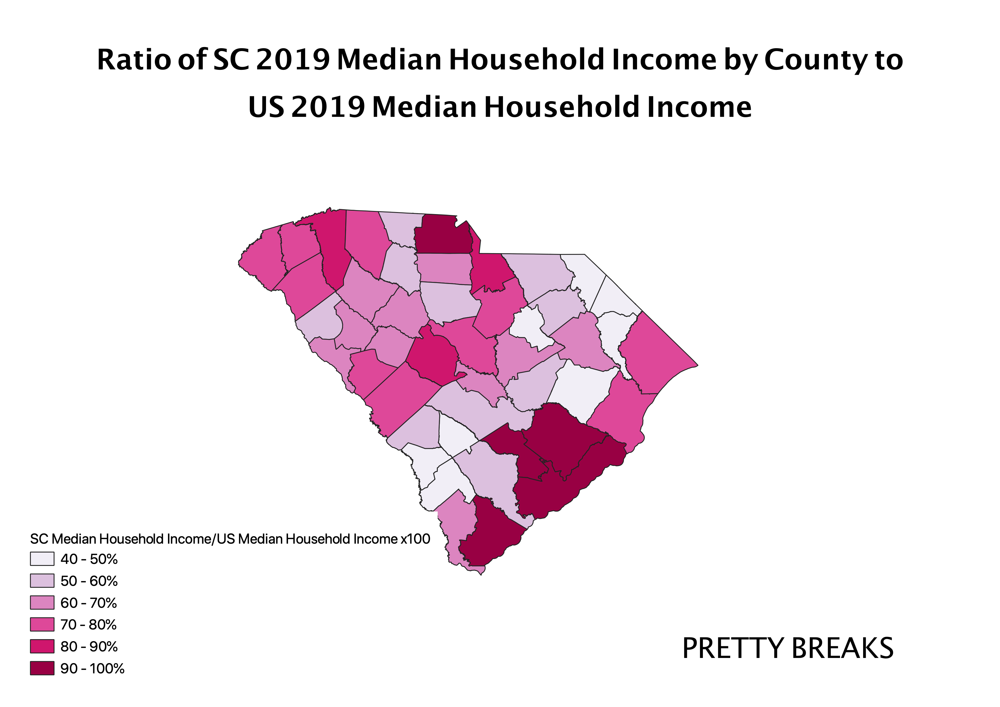
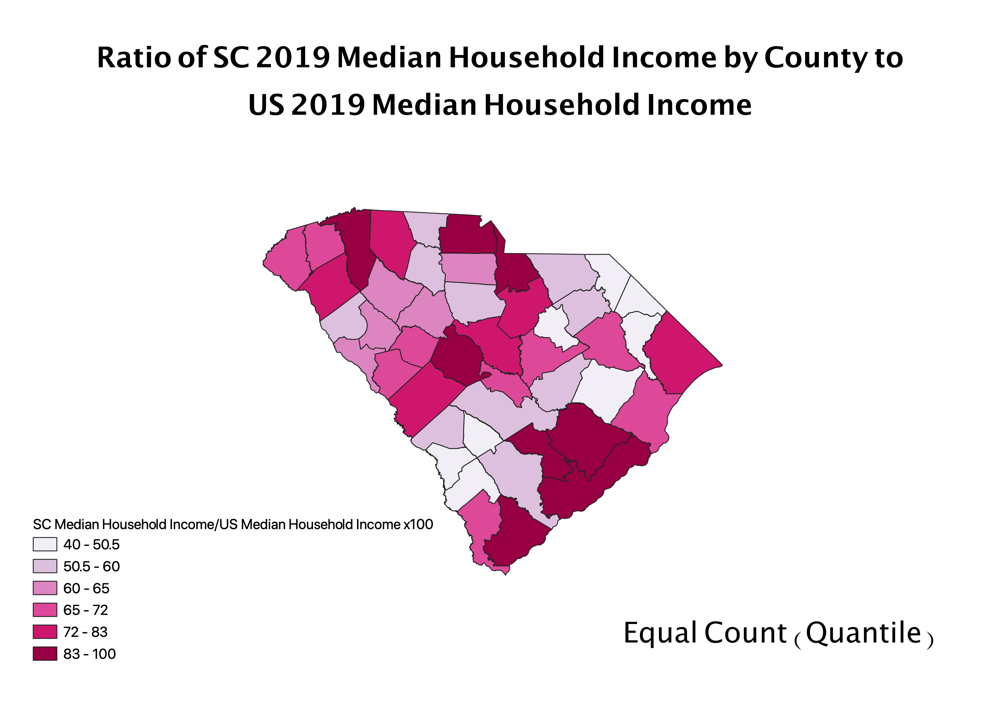

Homework 8: Census Data Ratios and Categories
I chose to show a ratio of the median household income of each county in South Carolina in 2019, and divide it by the national median household income in the US in 2019. Because the initial data I chose for Homework 7, median household income, was already a measure of standard deviation, I could not normalize it by dividing by something like the total population in each county. Because all 46 counties in South Carolina have a median household income BELOW that of the national median household income, I chose to use this value for my ratio instead of just the statewide median household income.
Natural Breaks
A benefit of using the natural breaks classification is that the data are grouped together based on natural grouping within the data, making the colors on a chloropleth look more evenly distributed on the map. However, this classification may not be ideal when looking to compare different data sets.

Pretty Breaks
Pretty break data classification often makes maps and their data easier to understand and more pleasing to the eye. However, this may simplify the data too much for more in-depth and precise data analysis.

Equal Count (Quantiles)
Using a quantile classification is useful because each category has an equal number data values, ensuring that there are no categories without values or a category with all. However, this data can be midleading at times, as each category encompasses a different range of values, which can be vastly different depending on the specific data you are using.
